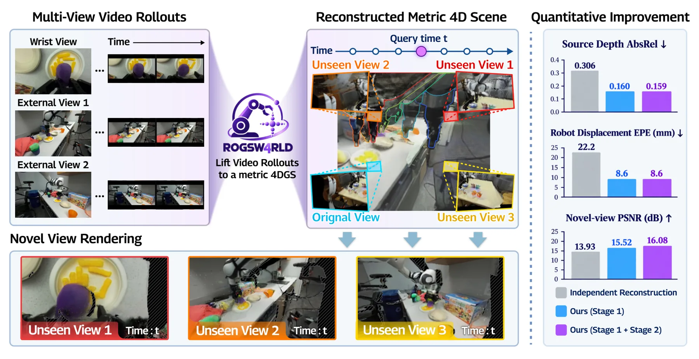
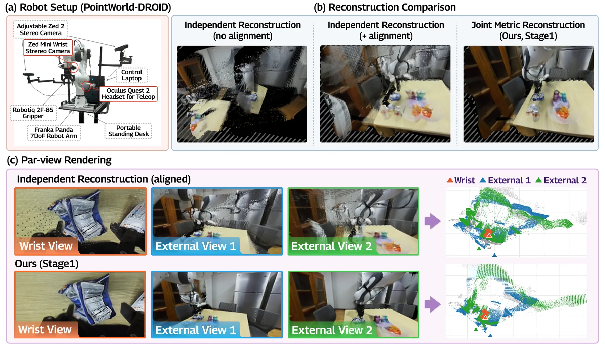
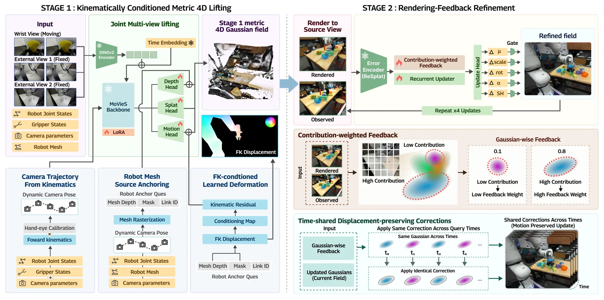
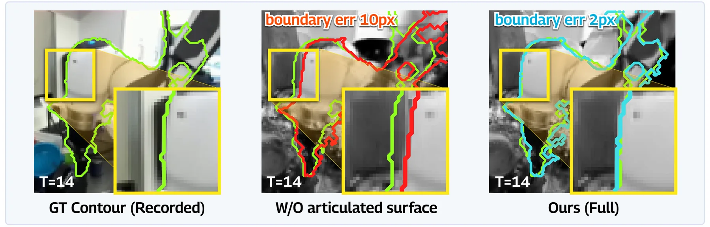
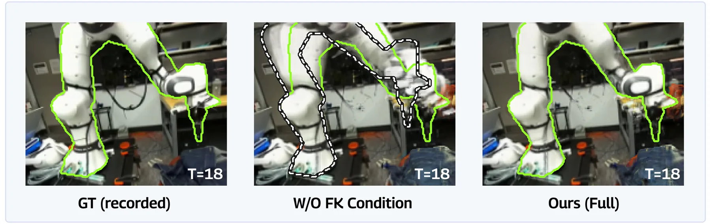
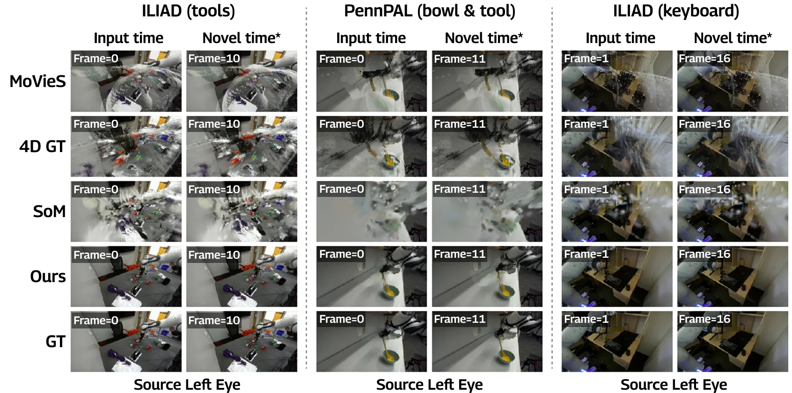

RoGSW4RLD：把机器人世界模型 rollout 前馈提升为度量 4D 高斯场
RoGSW4RLD: Feed-Forward 4D Gaussian Lifting for Robot World Model Rollouts
两阶段前馈把多相机（含机器人腕部相机）rollout 提升为统一度量 4D 高斯场：Stage 1 用关节网格锚定 + FK 条件化形变做联合提升，Stage 2 做保持位移的渲染反馈细化；256 留出 DROID 情节上新视角 PSNR +2.15 dB、AbsRel 0.373→0.197、机器人 EPE 22.2→8.6 mm。
PSNR
AbsRel
EPE
time
作者、单位与技术谱系 · Research context
作者与单位
研究脉络
- 视频世界模型（Cosmos 3 等）上游方向关系：本方法把世界模型生成的未来视频直接提升为 4D 场，而非另学几何转换模型。[论文摘要与第 1 节]
- 动态 4D 重建（MoVieS、4DGT、Shape-of-Motion）方法基座/对照关系：作为逐相机重建基线，本方法在其上加入联合多相机提升与机器人先验。[论文第 5 节]
- 本篇推进：关节几何+FK 条件化的两阶段提升本篇推进关系：用网格锚定与 FK 条件化把多相机 rollout 提升为统一度量 4D 高斯场。[论文第 1 节贡献]
合作网络
- Korea University ↔ Dongguk University 跨机构署名Korea University（Kim, Kim） → Dongguk University（Kim, Song）关系：共同署名[arXiv 首页署名]
- 对 DROID / ILIAD / PennPAL 数据集依赖本方法评测 → DROID / ILIAD / PennPAL关系：明确技术依赖[论文第 5.1 节]
作者与单位取自 arXiv 首页署名；脉络依据论文引用与自述；未发现公开代码声明，故不登记代码节点。
方法本质拆解 · What actually changed
是不是微调？
是训练：对多相机联合提升网络施加 LoRA 适配，并训练 FK 条件化的学习形变与 Stage 2 的修正模块；推理用固定权重、无逐场景优化。可选地为 Stage 1 额外训练一个潜在 token 适配器。所以权重确实变了，但不动逐场景参数。
有没有额外约束？
结构化先验是核心约束：机器人关节网格源锚定把机器人表面钉在源时刻；FK 条件化用运动学先验引导（而非替换）所有轨迹的学习形变；Stage 2 强制「保持初始时间位移」只允许时间共享的位置/外观修正。
推理/后端到底做了什么？
推理是两阶段前馈：Stage 1 联合提升成度量 4D 高斯场，Stage 2 用源视图渲染反馈做若干次保持位移的修正（论文指出超过两次更新收益递减）。无全局 BA、无逐场景拟合；Stage1 0.59 s、四步细化 9.08 s。
方法本质是什么？
本质是「用机器人自身的几何与运动学把多相机观测锚到统一度量坐标系」：网格锚定定位置、FK 引导定运动，从而在提升阶段就消解跨相机的 ego/动态耦合。它没有做的是提升非机器人物体的运动精度，也没覆盖未训练过的机器人形态。
输入为同步多相机 rollout（含腕部+外部相机）+标定+机器人网格/运动学；改变的位置是在提升阶段注入机器人几何与 FK 先验；约束/合并动作是联合多相机提升 + 保持位移的渲染反馈细化；直接效果是用固定权重得到跨视角一致的度量 4D 场。

动机与问题Motivation
动机与问题
视频世界模型输出的是分立的视频流，不是可跨视角查询的共享场景；而把每条流独立重建再按标定合并（post-hoc merging）不约束跨相机一致性，会留下重复或冲突的表面。当运动相机（机器人腕部）与固定外部相机混在一起时，视角同时耦合了自运动与场景动态，这个问题尤甚。论文要问的是：能否在提升阶段就把「机器人几何/运动学」这类结构化先验融进去，而不是事后对齐。
方法Method
方法总览
Stage 1 做机器人感知的度量 4D 提升：对多视图视频联合处理（对 QKV 与输出施加 LoRA），注入相机轨迹、机器人网格源锚定与 FK 条件化的学习形变，使机器人表面锚定在源时刻、机器人轨迹由 FK 引导而非解析替换。Stage 2 做保持位移的渲染反馈细化：用源视图渲染反馈纠正残余的放置与外观误差，位置修正跨查询时刻/渲染相机共享，严格保持高斯中心位移。两阶段都无逐场景优化，推理用固定权重。
关键技术细节
每个高斯保留其源相机 v_i、源时刻 s_i，沿源相机光轴反投影得到度量深度；机器人网格源锚定提供机器人在共同坐标系下的表面约束，FK 条件化提供关节运动先验。Stage 2 的关键设计是「时间共享的位移保持修正」：修正量跨查询时刻与渲染相机共享，只动位置的小修正与外观，不改初始时间位移，避免破坏已建立的运动学一致性。可选地支持把 RGB token 换成潜在 token 的接口（附录 E），但论文发现潜在 token 会略降深度 AbsRel。

实验Experiments
实验设置
评测 256 个 DROID 情节（来自 ILIAD 与 PennPAL），对两阶段与可选适配器都作留出；输入为腕部+外部标定相机、已知机器人几何、提供的轨迹与 17 帧间隔。指标包括源/新视角 PSNR、LPIPS、深度 AbsRel、机器人位移 EPE（mm）、机器人深度误差（mm），以及时间/显存。对照为逐相机重建方法 MoVieS、4DGT、Shape-of-Motion（SoM）；另一组是在动作条件 Cosmos 3 rollout 上的评测。
实验数字与比较
录制观测（论文表 1）：Ours(Stage1+2) 新视角 PSNR 16.08、AbsRel 0.197、EPE 8.6 mm，对比 MoVieS 13.93/0.373/22.2；源视角 PSNR 25.46 对 MoVieS 19.71。Cosmos 3 rollout（论文表 1）：Ours(Stage1+2) 新视角 PSNR 15.52、AbsRel 0.215、EPE 8.7 mm，对比 MoVieS 13.69/0.404/22.6。效率：Stage 1 为 0.59 s/5.20 GiB、Stage1+2 为 9.08 s/13.11 GiB，而 SoM 需 1713 s/2.35 GiB（数量级更慢）。
消融/失败边界
联合提升 vs 逐相机（论文表 2a）：切断跨相机交互后，即使加细化，新视角 AbsRel 仍停在 0.391–0.392，而联合 Stage 1 为 0.200，说明「更强的源视角拟合」并不能恢复留出几何。机器人几何/运动学（论文表 2b）：去掉网格锚定使 EPE 从 8.64 升到 30.15 mm；去掉 FK 条件化使机器人深度误差从 13.7 升到 37.6 mm，两者作用分工不同。失败边界：Stage 2 主要改善光度拟合（源视角 +3.54 dB、新视角 +0.56 dB），新视角 LPIPS 反而略差，且论文自陈机器人 EPE 稳定并不代表非机器人运动准确。
局限与迁移Limitations & Transfer
局限与待核验
作者在附录 F 明确承认：留出只在 ILIAD/PennPAL，评测使用标定相机、已知机器人几何、给定轨迹与 17 帧间隔；更宽基线、新机器人形态、更长 rollout 均未测；立体/轨迹参考误差会影响精度，机器人 EPE 不代表非机器人运动精度。我们的待核验项：系统级比较（架构、训练、输入都不同）不能直接归因到单一设计；论文称「保持位移」但渲染运动可随合成权重变化，这一点的实际一致性未被独立量化。
与你研究路线的关系
可迁移模块是「把结构化几何/运动学先验在提升阶段注入，而不是事后对齐」：这对应我们 GNSS/INS 里把杆臂、平台运动学作为硬先验进入状态估计而非事后改正。第二是「保持位移的细化」——只在不动时间结构的前提下修正位置/外观，可借鉴到我们做在线地图/轨迹纠正时避免破坏已收敛的动力学。下一步最小实验：在现有多相机/多传感器序列上，比较「先各自重建再合并」与「先对齐再联合细化」的度量一致性，报告跨视角 AbsRel 与位移误差。







